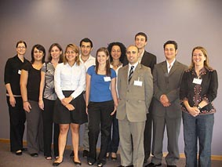

Lanciata la prossima Conferenza Nazionale dei giovani italiani in Australia
I giovani esperti delle varie circoscrizioni presenti in Australia si sono riuniti presso l'Italo-Australian Club di Canberra su invito del Consiglio Generale degli Italiani all'Estero e i vari Com.It.Es d'Australia.
Tre documenti sono stati elaborati durante l'incontro. Il primo è un documento propositivo per la conferenza internazionale dei giovani italiani, che si terrà in Italia l'anno prossimo.
Il secondo documento pianifica un'iniziativa dei giovani per la realizzazione di una loro conferenza nazionale in Australia con l'obiettivo di dar spazio alle tante voci ed esigenze delle nuove generazioni.
La riunione ha inoltre dato l'opportunità ai giovani di presentare delle proposte ai rispettivi Presidenti dei Com.It.Es, per lo sviluppo di strategie per una maggiore rappresentanza e coinvolgimento dei giovani.
Il tema principale emerso durante l'incontro è il bisogno basilare di costruire un network per poter comunicare con la realtà giovanile in Australia nel contesto locale, nazionale ed internazionale.

From left to right: Sara Lucchesi, Emilia Belfiore, Danila Marinolli, Ermenigilda Boccabella, David Ferrini, Isabella Restifa, Rosanne Vignogna, Michael Donato, Andrew Antenucci, John Cecchi, Sandra Pitronaci.
Adapted and reproduced with the permission of AusItalia.com.